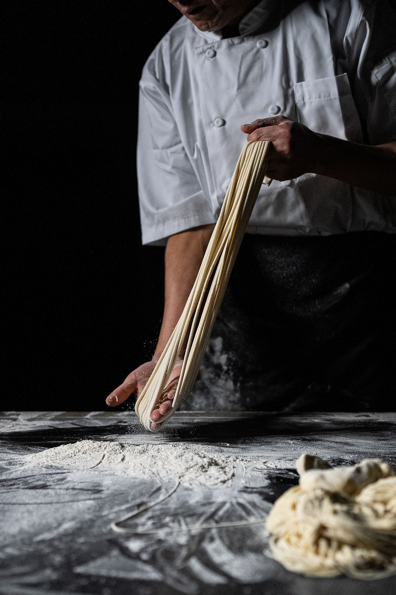

ABOUT US
Lan Feast is an Authentic Chinese full-service Cuisine & Bar providing famous Chinese Lanzhou Hand pulled Beef Noodles Soup, various Chinese dishes with full liquor bar including beer, wine, spirits and Chinese-Style cocktails. We are aiming to be the best Lanzhou Hand-pulled noodles cuisine in Boston featuring fully-customized noodles with purely hand pulled noodle and homemade beef soup freshly stewing 3 hours every day. Our chef has been in the industry over 20 years. The noodles type selection ranges from thin, regular, thick, wide, extra wide or even special shapes. More than that, customers can choose different options for spice level, no cilantro/leek, and other add-on options. We insist on making all the dishes from original ingredients and natural spices. Hand-Made is our core spirit and value.
Besides our noodles, we offer very authentic Chinese dishes, not just limited to the traditional well-known ones like Kung Pao Chicken, Beef Broccoli. We have the best Tender Boiled Mutton and Braised Lamb Shank in Boston, with fresh lamb originally from Denver Market. We also introduce new style Chinese dishes from North to South in our selection to change the customer’s stereotype of Chinese food. It can be modern, savory, enjoyable and let the customers feel the culture from the taste bud.
250 Harvard St, Brookline, MA 02446
MON - THU: 11:30AM-3PM, 5PM-9:30PM
FRI - SUN: 11:30AM - 10PM